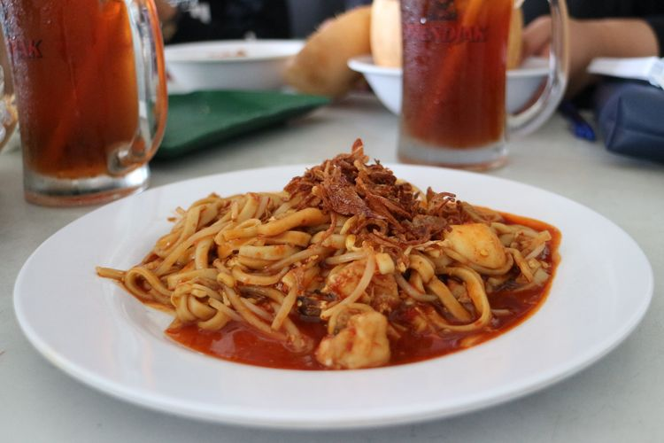

Sejarah

Anambas, sebuah kabupaten di provinsi Kepulauan Riau, Indonesia, telah menjadi pusat perdagangan
laut sejak zaman dahulu dengan pengaruh budaya Melayu yang kental, selain itu juga pernah menjadi
bagian dari wilayah kekuasaan kolonial Belanda yang terlibat dalam perdagangan rempah-rempah, dan
kini dikenal memiliki potensi wisata alam bawah laut yang menarik dengan keindahan pantai berpasir
putih, terumbu karang yang indah, serta keanekaragaman hayati laut yang melimpah, sementara
pemerintah terus melakukan pembangunan infrastruktur untuk meningkatkan perekonomian dan
kesejahteraan masyarakat setempat.
Geografis

Kabupaten Kepulauan Anambas adalah sebuah kabupaten di Provinsi Kepulauan Riau, Indonesia. Ibu
kotanya adalah Tarempa. Kabupaten ini terdiri dari 238 pulau tersebar di sepanjang Laut Cina
Selatan, yang terbesar adalah Pulau Siantan.
Kabupaten ini memiliki luas wilayah 590,14 km² dan berpenduduk 43.603 jiwa. Kabupaten ini terdiri
dari 10 kecamatan, yaitu Siantan, Palmatak, Jemaja, Jemaja Timur, Jemaja Barat, Kute Siantan,
Siantan Tengah, Siantan Selatan, Siantan Timur dan Siantan Utara.
Budaya

Budaya Anambas merupakan perpaduan dari berbagai pengaruh budaya, terutama Melayu, yang tercermin
dalam bahasa, adat istiadat, dan seni budaya, dengan kegiatan tradisional seperti tarian, musik, dan
upacara adat yang masih dijaga keasliannya hingga saat ini, serta kehidupan masyarakat yang masih
sangat terkait dengan laut dan hasil laut seperti perikanan dan kerajinan tangan berbasis bahan
alam.
Kuliner

Kuliner khas Anambas meliputi hidangan-hidangan laut yang lezat seperti ikan bakar, gulai kepala
ikan, sambal belacan, serta hidangan tradisional seperti nasi dagang dan dodol Anambas, namun salah
satu yang paling terkenal adalah Mie Tarempa, hidangan khas yang terbuat dari mie kuning yang
disajikan dengan kuah kental yang gurih dan berbagai bahan seperti potongan ikan, udang, telur, dan
sayuran, memberikan cita rasa yang lezat dan menggugah selera.